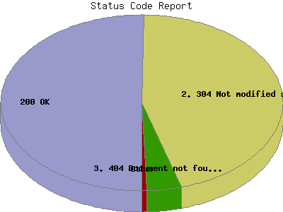

Report generated by Analog 6.0 and Report Magic 2.21
|
Web Server Statistics for "Harish Narayanan (hnarayan) - April 2007" Report generated by Analog 6.0 and Report Magic 2.21 |
The Status Code Report lists the HTML headers returned to the client from the server. For example a status '200 OK' means that the requested page or image was found and the server will now send it. A '404 Document Not Found' means that the requested page or image cannot be found on this server at the specified location. This can occur if the client mistyped a URL or clicks on a broken link. A complete list of the HTTP status codes can be found at HTTP Working Group.
This report shows all results. This report is sorted by number of requests.

| Status Code | Number of requests | Percentage of the requests | |
|---|---|---|---|
| 1. | 200 OK | 56,423 | 50.31% |
| 2. | 304 Not modified since last retrieval | 50,638 | 45.15% |
| 3. | 404 Document not found | 4,392 | 3.92% |
| 4. | 301 Document moved permanently | 466 | 0.41% |
| 5. | 206 Partial content | 241 | 0.21% |
This report was generated on May 10, 2007 10:49.
Report time frame April 1, 2007 00:00 to April 30, 2007 23:54.
| Web statistics report produced by: | |
 Analog 6.0 Analog 6.0 |  Report Magic 2.21 Report Magic 2.21 |